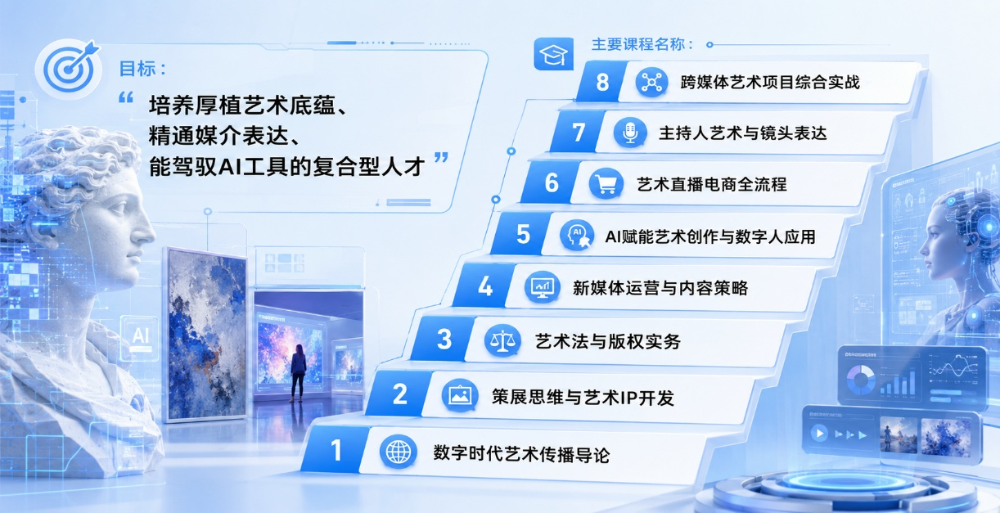
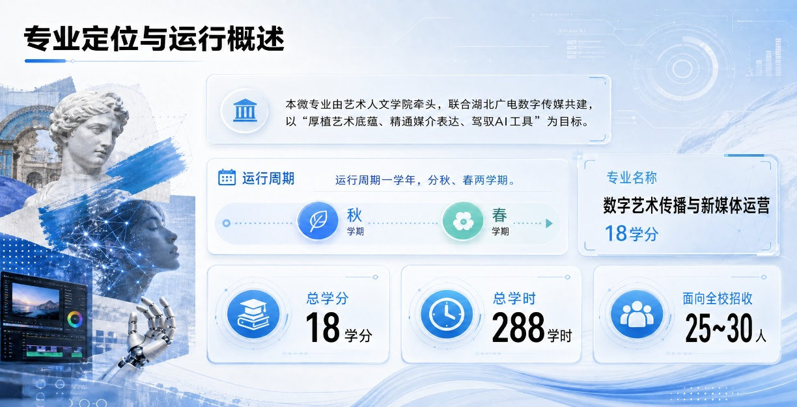

秋叶集团携手湖北广电、湖北美术学院艺术人文学院
共建微专业数字艺术传播与新媒体运营
培养架构
一学年制精英培养（秋春两学期），18 学分 / 288 学时的密集型训练，面向全校遴选 25-30 名具备艺术潜质与数字敏感度的拔尖学生
课程体系
八门核心课程贯通 "理论 - 工具 - 场景 - 实战" 全链路 —— 从数字时代艺术传播导论建立认知底座，到策展思维与艺术 IP 开发培养创意策划能力
从艺术法与版权实务筑牢职业底线，到新媒体运营与内容策略掌握传播规律
从 AI 赋能艺术创作与数字人应用实现技术跃迁，到艺术直播电商全流程、主持人艺术与镜头表达打磨实战技能，最终以跨媒体艺术项目综合实战完成能力整合与作品产出
培养特色
学期内 12 周集中授课（每周 3 次，每次 4 学时），周六日留白保障创作消化
三方师资混编教学 —— 美院教授夯实艺术根基，秋叶导师传授 AI 工具与新媒体方法论，广电专家导入产业真实项目，实现 "学界 + 业界 + 技术方" 的协同育人闭环
AI产教融合专业共建